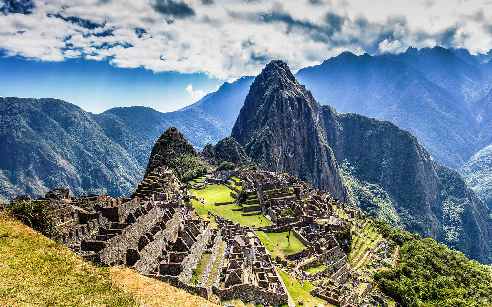
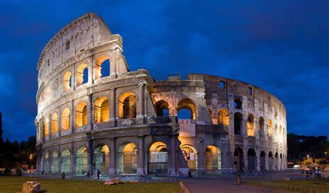
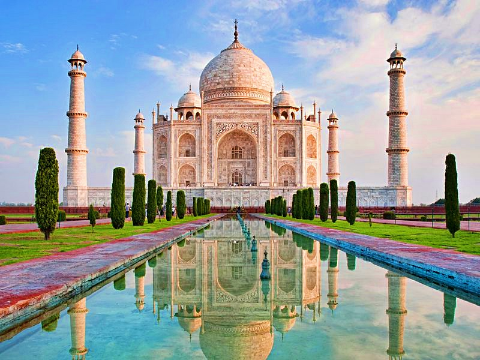
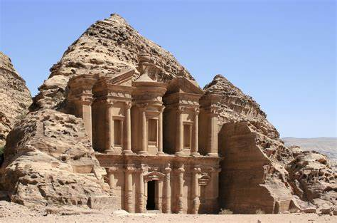

MACHU PICCHU
Machu Picchu es una antigua ciudadela inca localizada en los Andes peruanos. Su nombre, que significa “montaña vieja” en quechua
COLISEO
El Coliseo romano se llamaba originalmente Anfiteatro Flavio, se trata de un anfiteatro de planta ovalada con fines de entretenimiento masivo.
MURALLA CHINA
La Muralla China es un muro fortificado que se construyó alrededor de China, a fin de proteger al imperio de posibles invasores.

TAJ MAHAL
El Tal Mahal es un mausoleo construido en el siglo XVII por el emperador Shah Jahan para honrar a su esposa predilecta, Arjumand Banu Begum, conocida también como Mumtaz Mahal.
PETRA
La Estatua de Cristo Redentor se encuentra en la punta del monte Corcovado en la ciudad de Río de Janeiro en Brasil.
CRISTO REDENTOR
La Estatua de Cristo Redentor se encuentra en la punta del monte Corcovado en la ciudad de Río de Janeiro en Brasil.

CHICHÉN ITZÁ
El complejo urbano está ubicado en la península de Yucatán, México, y se encuentra emplazado sobre cinco cenotes, que abastecían de agua a la población maya.